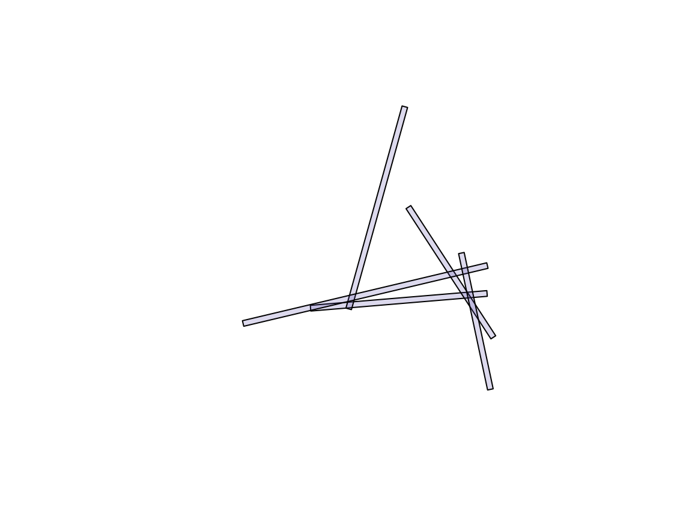

Overlay robustness: the history of issue 7
Source:vignettes/articles/overlay-robustness.Rmd
overlay-robustness.RmdThis article records polymer issue 7, “sf handling polygon intersections”, from its report in January 2020 to October 2026. It reruns the issue’s examples with the software of today and sets out where polymer, ‘sf’ and ‘GEOS’ stand on the problem underneath it. That problem is older than any of these packages: deciding when two computed points are the same point.
library(polymer)
sf::sf_extSoftVersion()[c("GEOS", "GDAL", "PROJ")]
#> GEOS GDAL PROJ
#> "3.12.1" "3.8.4" "9.4.0"The results below come from the ‘GEOS’ version printed above, which is whatever the machine that built this page has. Where the text quotes numbers it says which version they came from.
The report (2020)
The issue opened with a minimal example: ten random line segments,
buffered by 1 unit with flat end caps, then the n-ary intersection of a
subset of five with sf::st_intersection(). At the time this
stopped with
TopologyException: found non-noded intersection between
LINESTRING (31.116 34.6469, 32.3567 32.7435) and
LINESTRING (-7.05113 31.4604, 33.1976 34.8206) at
31.115984892808036 34.646855583109961The discussion that followed found three things that recur through the rest of this history:
- Removing a buffer far from the reported location made the error go away. The failure was not local to the geometry involved.
- Rounding the input coordinates to six significant figures fixed this data set, but not data sets in general, and buffering reintroduces long coordinates anyway.
- Plotting the reported segment and point showed the point does not lie on the segment it was computed from.
The example data are reproduced here without the ‘sfheaders’ and ‘tibble’ packages used in the original.
d <- data.frame(
x = c(-21.5621127514169, 40.2962636668235, -31.1925547663122,
-22.5405948469415, -23.0838318355381, 29.9605491571128,
11.478958860971, -8.19494309835136, 42.4840283580124,
12.7380638383329, 40.4127392685041, -45.2017169678584,
16.2871447857469, -3.90106798149645, 41.4583092322573,
31.2947675585747, -22.8197822580114, -10.0503325928003,
-19.7022920008749, -29.5000644400716),
y = c(29.2453840607777, 34.4098202185705, 98.7871219869703,
60.797041747719, 3.01325886975974, 11.2556441454217,
99.8579441336915, 29.0021185064688, 19.0383932320401,
64.6716579562053, 44.1835718695074, 23.8893277477473,
83.8549552252516, 62.2791656060144, 0.788207678124309,
48.5741916345432, 73.8897712901235, 12.106719147414,
42.6758473273367, 22.9514547623694))
## one segment from each consecutive pair of rows
lines_from <- function(d) {
m <- as.matrix(d[c("x", "y")])
sf::st_sfc(lapply(seq_len(nrow(m) / 2), function(i) {
sf::st_linestring(m[c(2 * i - 1, 2 * i), ])
}))
}
buffered <- function(lines, width = 1) {
sf::st_sf(geometry = sf::st_buffer(lines, width, endCapStyle = "FLAT"))
}
b <- buffered(lines_from(d)[c(1, 4, 5, 6, 8)])
plot(sf::st_geometry(b), col = "#5142A533")
Timeline
| Date | Event |
|---|---|
| 2020-01 | Issue opened with the example above and the
TopologyException. |
| 2020-12 | GEOS 3.9.0 makes the OverlayNG engine the default for overlay. |
| 2023-02 | The original example now succeeds (GEOS 3.9.3); 100 random buffered lines still fail with a GEOS exception. |
| 2023-04 | Experiments with fixed-precision overlay
(grid_size) in the ‘geos’ R package: a coarse grid succeeds
but moves the geometry visibly; a very fine grid still fails at 100
lines. |
| 2026-09 | GEOS 3.15.0 released. |
| 2026-10 | The failure is restated as a vertex-identity problem (below). polymer 0.3.0 is rebuilt on ‘wkpool’ and ‘cdtr’. An exact-arithmetic constrained triangulation appears on a branch of ‘laridae’. |
GEOS releases have continued to work on overlay: 3.14.0 (August 2025) and 3.15.0 (September 2026), whose NEWS includes a fix to the intersection of slightly overlapping polygons (GH-1499). Results for both 3.12.1 and 3.15.0 are recorded below.
What goes wrong: vertex identity
Every overlay has to decide when two points are the same vertex. The choices form a ladder, described in more detail in notes on triangles in GeoArrow:
- Exact equality of input coordinates. Points are the same only if their doubles are identical.
- Tolerance or snapping. Points within a distance, or on the same grid cell, are merged. Robust, but it moves the geometry.
- Noding in double precision. Where two edges cross, the crossing is computed and inserted as a new vertex on both. The computed point is rounded to the nearest double, so in general it lies on neither edge.
- Exact arithmetic. Crossings are held as rational numbers, so they lie exactly on both edges and every later test about them is exact.
The 2020 error is a rung 3 failure. Where several buffered edges cross almost at one point, the rounded crossings do not lie on their edges, the noded result fails validation, and which crossings exist at all depends on every other edge in the input. That is why removing a distant buffer changed the outcome.
Where the tools sit on the ladder:
-
GEOS. OverlayNG first nodes in floating precision
(rung 3) and validates the result. If noding fails, it retries with
snapping noders at automatically chosen tolerances (rung 2), and throws
the original
TopologyExceptiononly if those fail too. Fixed-precision overlay with snap rounding (grid_sizein ‘geos’ and ‘shapely’,sf::st_set_precision()in ‘sf’) is rung 2 by request. - polymer. Vertices are first shared on exact coordinate equality with ‘wkpool’ (rung 1). All edges of all layers then go into one constrained triangulation with ‘cdtr’, which binds the CDT library. Its orientation tests use adaptive exact predicates, but crossings are computed by interpolation in double (rung 3).
-
Exact kernels. CGAL’s
exact-predicates-exact-constructions kernel is rung 4, at a cost in
speed and memory. The
exact-cdtbranch of ‘laridae’ has a one-shot constrained triangulation with exact crossings,lari_cdt(exact = TRUE), built on it.
Rerunning the examples
The original five-buffer example, then all ten buffers:
nary_sf <- function(x) {
r <- try(sf::st_intersection(x), silent = TRUE)
if (inherits(r, "try-error")) conditionMessage(attr(r, "condition")) else r
}
r5 <- nary_sf(b)
r10 <- nary_sf(buffered(lines_from(d)))
c(five = NROW(r5), ten = NROW(r10))
#> five ten
#> 14 24And the 2023 stress test: 100 random segments, buffered the same way.
stress <- function(seed, n = 200) {
set.seed(seed)
buffered(lines_from(data.frame(x = runif(n, -50, 50), y = runif(n, 0, 100))))
}
x <- stress(3)
t_sf <- system.time(r <- nary_sf(x))[["elapsed"]]
t_polymer <- system.time(pieces <- fuse(polymer(x)))[["elapsed"]]
c(sf_ok = is.data.frame(r), sf_seconds = t_sf, polymer_seconds = t_polymer)
#> sf_ok sf_seconds polymer_seconds
#> 1.000 8.359 0.406With GEOS 3.12.1 and 3.15.0 none of these throw. Across ten random
seeds of the stress test, every st_intersection() call
succeeded with both versions, taking 8 to 29 seconds per seed against
0.2 to 0.45 seconds for fuse(polymer(x)).
Success is not the same as correct
The n-ary intersection is a partition of the covered area, so its pieces satisfy two identities that need nothing but areas:
- area weighted by the overlap count equals the summed area of the inputs;
- plain area equals the area of the union of the inputs.
identities <- function(area, n, x) {
c(weighted = sum(area * n) / sum(as.numeric(sf::st_area(x))) - 1,
union = sum(area) / as.numeric(sf::st_area(sf::st_union(x))) - 1)
}
a_sf <- as.numeric(sf::st_area(r))
a_polymer <- as.numeric(sf::st_area(sf::st_as_sf(pieces)))
rbind(sf = identities(a_sf, r$n.overlaps, x),
polymer = identities(a_polymer, pieces$n, x))
#> weighted union
#> sf 0.002949908 1.068599e-03
#> polymer 0.000000000 6.661338e-16With GEOS 3.12.1, the ‘sf’ pieces for this seed add up to about 0.1% more than the union, so some of them overlap, and the overlap-weighted area is off by 0.3%. The polymer pieces satisfy both identities to rounding, because they are dissolved from one mesh and cannot overlap by construction.
The same check over all ten seeds, recorded once rather than run here (relative errors of the ‘sf’ result; polymer was within 1e-15 on every seed):
for (seed in 1:10) {
x <- stress(seed)
r <- sf::st_intersection(x)
print(identities(as.numeric(sf::st_area(r)), r$n.overlaps, x))
}| seed | weighted, 3.12.1 | union, 3.12.1 | weighted, 3.15.0 | union, 3.15.0 |
|---|---|---|---|---|
| 1 | -1.9e-04 | 1.6e-04 | 7.0e-04 | 1.8e-04 |
| 2 | 6.0e-06 | 6.2e-06 | 9.7e-05 | 9.9e-05 |
| 3 | 2.9e-03 | 1.1e-03 | 8.2e-05 | 1.4e-04 |
| 4 | 7.3e-04 | 6.1e-04 | 1.3e-03 | 6.4e-04 |
| 5 | 8.5e-04 | 5.4e-04 | 2.9e-05 | 5.3e-05 |
| 6 | 5.4e-05 | 1.2e-04 | -4.3e-04 | 3.7e-04 |
| 7 | 2.3e-03 | 2.0e-04 | -5.5e-05 | -1.1e-04 |
| 8 | 4.3e-07 | 7.5e-07 | 3.4e-05 | 3.2e-05 |
| 9 | 6.4e-04 | 1.2e-03 | 4.2e-05 | 2.0e-05 |
| 10 | 1.2e-03 | 1.6e-03 | 2.9e-05 | 8.5e-05 |
The errors change from one version to the next but do not go away, and they take both signs: a positive union error means pieces overlap, a negative one means gaps between them. The 3.15.0 runs used a GEOS built from the release source and loaded in place of the system library. Area per overlap count shows where the two disagree:
rbind(sf = tapply(a_sf, r$n.overlaps, sum),
polymer = tapply(a_polymer, pieces$n, sum))
#> 1 2 3 4 5 6 7 8
#> sf 3036.068 1607.229 674.0507 232.4412 51.89470 8.726565 1.56102 0.156478
#> polymer 3034.046 1613.130 671.8727 225.2509 51.39387 8.726565 1.56102 0.156478The ‘sf’ result also mixes in lower-dimensional pieces where boundaries touch:
table(as.character(sf::st_geometry_type(r)))
#>
#> GEOMETRYCOLLECTION LINESTRING MULTILINESTRING MULTIPOINT
#> 884 82 55 20
#> MULTIPOLYGON POINT POLYGON
#> 292 46 1314Pieces of a partition can touch but never overlap, so
sf::st_overlaps() should find no pairs among them. The
helper below counts directed hits, and the pairs that are reported in
only one direction:
overlap_pairs <- function(g) {
o <- try(sf::st_overlaps(g), silent = TRUE)
if (inherits(o, "try-error")) return(conditionMessage(attr(o, "condition")))
m <- as.matrix(o)
c(hits = sum(m), one_way = sum(m != t(m)))
}
overlap_pairs(sf::st_geometry(r)[a_sf > 0])
#> [1] "TopologyException: side location conflict at -20.848947450598626 76.03557089123953. This can occur if the input geometry is invalid."
overlap_pairs(sf::st_geometry(sf::st_as_sf(pieces)))
#> hits one_way
#> 0 0With GEOS 3.12.1 the test on the ‘sf’ pieces raised a new
TopologyException (“side location conflict”): the exception
had moved from computing the overlay to using its output. With GEOS
3.15.0 it ran and reported about 17,600 hits, 14 of them in one
direction only. The intersection of a sample reported pair had zero
area, so the pieces cross each other along shared boundaries at the
scale of rounding. The polymer pieces gave no hits with either
version.
Where polymer still fails
polymer is on rung 3 as well, and has failures of its own: one in the triangulation, and one in the arithmetic that turns the mesh back into polygons.
Near-coincident input. The ‘sf’ pieces above are many thin slivers with almost-shared edges. Overlaying them again with polymer stops in the triangulation:
slivers <- sf::st_collection_extract(r, "POLYGON")
res <- try(polymer(slivers), silent = TRUE)
if (inherits(res, "try-error")) cat(res) else res
#> Error : Intersection of constraint edges (39, 92) and (38, 43) can not be resolved: computed split vertex is invalid
#> in 'insertEdgeIteration' at CDT/Triangulation.hpp:659CDT computed a crossing of two nearly parallel constraint edges, the rounded point fell outside where it must be, and CDT refused it.
Tiny rings in fuse(). At 500 buffered
segments, one seed in ten built a mesh but failed in
fuse(). The mesh is sound: every triangle has positive
area, computed from coordinate differences.
x500 <- stress(2, n = 1000)
pool <- polymer(x500)
v <- wkpool::pool_vertices(pool$mesh)
t <- wkpool::pool_triangles(pool$mesh)
i <- match(t$.vx0, v$.vx)
j <- match(t$.vx1, v$.vx)
k <- match(t$.vx2, v$.vx)
tri <- ((v$x[j] - v$x[i]) * (v$y[k] - v$y[i]) -
(v$x[k] - v$x[i]) * (v$y[j] - v$y[i])) / 2
c(triangles = length(tri), not_positive = sum(tri <= 0), smallest = min(tri))
#> triangles not_positive smallest
#> 2.550860e+05 0.000000e+00 1.413135e-13
res <- try(fuse(pool), silent = TRUE)
if (inherits(res, "try-error")) cat(res) else nrow(res)
#> [1] 124328The failure is in how fuse() decides whether a dissolved
ring is an outer ring or a hole: by the sign of its area, from a
shoelace sum over absolute coordinates. The rounding error of that sum
grows with the size of the coordinates (here about 1e-13), and one piece
of this overlay is a single triangle of area 1.4e-13. Its area came out
exactly zero, so it was taken for a hole with no outer ring. Translating
each ring to its own first vertex before the sum gives the correct area
and fixes all ten seeds, as reported in issue 18. If
the chunk above shows a piece count rather than an error, that fix is
in.
This is the problem of issue 7 again, in miniature: a decision (inside or outside, outer or hole) made from the sign of a quantity computed in double precision.
Where things stand
- sf and GEOS. For this issue’s inputs, the exceptions of 2020 and 2023 are gone: OverlayNG’s fallback to snapping is doing its job. The remaining problems are speed, which grows quickly with the number of overlaps, and output that is valid geometry piece by piece but not a partition, with GEOS 3.12.1 and 3.15.0 alike. These results should be rechecked against newer versions as they appear.
-
polymer. One triangulation of all edges is much
faster on these inputs and gives an exact partition of whatever mesh it
builds. The mesh itself still depends on double-precision crossings and
fails on near-coincident input, and
fuse()has a rounding fault of its own in telling outer rings from holes (issue 18). -
Next. The plan recorded in the issue is to move
polymer’s triangulation to rung 4: build the mesh with exact crossings
(as in
lari_cdt(exact = TRUE)), classify triangles by layer and feature exactly as now, and round to doubles only for output. The 100-segment stress test and the sliver re-overlay above are the test cases.